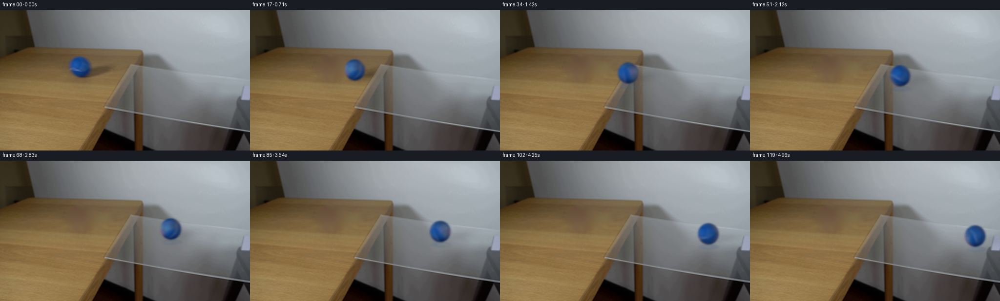
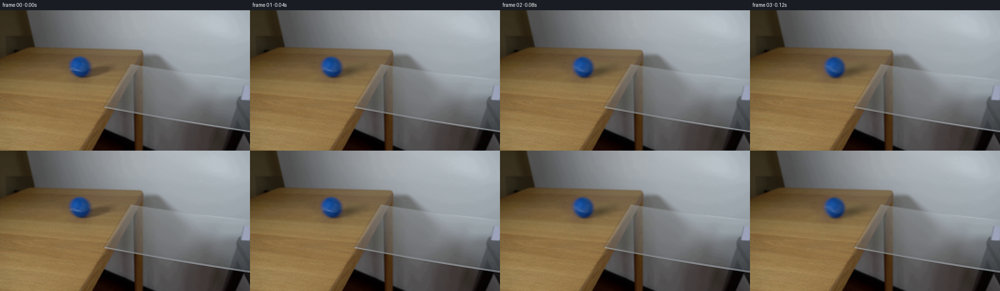

CODING AGENTS AS PIXEL WORLD MODELS
traex/GPT-6.1-Sol · 0027
点击播放 · 原生 RGB 像素
逐轮保存的候选
回放视频、检查图与代码变化。
每份候选均可单独播放。实际图片检查记录在下方工具轨迹中。
候选 01播放与检查图
点击播放 · 原生 RGB 像素


展开代码变化
--- 上一保存版本
+++ 本次保存版本
@@ -0,0 +1,214 @@
+"""Generate a locked-camera continuation using only the supplied photograph.
+
+The photograph is the set and the source for the ball's felt. A rotating
+sphere, recovered photographic illumination, a surface shadow and a subtle
+reflection are the only animated elements. No learned/model assets are used.
+"""
+from pathlib import Path
+import numpy as np
+from PIL import Image
+from scipy import ndimage, sparse
+from scipy.sparse.linalg import spsolve
+from artifact_io import save
+
+ROOT = Path(__file__).resolve().parent
+H, W = 288, 512
+CX, CY = 164.3, 116.0
+RX, RY = 20.7, 21.45
+Y, X = np.mgrid[:H, :W].astype(np.float64)
+
+
+def repair_table(photo):
+ # The foreground ball and its rightward shadow are removed together. A
+ # biharmonic extension continues the quiet wooden grain/color gradients.
+ mask = (((X-CX)/29.5)**2 + ((Y-CY)/27.2)**2 < 1)
+ dx, dy = X-195.0, Y-125.0
+ a, b = dx*.979 - dy*.204, dx*.204 + dy*.979
+ mask |= (a/44.5)**2 + (b/18.0)**2 < 1
+ # Fourth-order Dirichlet interpolation is useful for this smooth tabletop.
+ points = np.argwhere(mask)
+ ids = np.full((H, W), -1, dtype=np.int32)
+ ids[mask] = np.arange(len(points))
+ coeffs = [(0,0,20), (0,1,-8), (0,-1,-8), (1,0,-8), (-1,0,-8),
+ (1,1,2), (1,-1,2), (-1,1,2), (-1,-1,2),
+ (2,0,1),(-2,0,1),(0,2,1),(0,-2,1)]
+ rows, cols, values = [], [], []
+ rhs = np.zeros((len(points),3), np.float64)
+ indices = np.arange(len(points))
+ for dy, dx, c in coeffs:
+ py, px = points[:,0]+dy, points[:,1]+dx
+ neigh = ids[py,px]
+ inside = neigh >= 0
+ rows.extend(indices[inside]); cols.extend(neigh[inside]); values.extend(np.full(inside.sum(),c))
+ rhs[~inside] -= c*photo[py[~inside],px[~inside]]
+ matrix = sparse.coo_matrix((values,(rows,cols)),shape=(len(points),len(points))).tocsc()
+ clean = photo.copy()
+ clean[mask] = spsolve(matrix, rhs)
+ # Restore fine nonsemantic photographic grain to the interpolated region.
+ rng = np.random.default_rng(27)
+ grain = rng.normal(0,.50,(H,W))
+ grain = grain - ndimage.gaussian_filter(grain,1.1)
+ blend = np.clip(ndimage.distance_transform_edt(mask)/4,0,1)
+ clean += grain[:,:,None]*blend[:,:,None]
+ return np.clip(clean,0,255)
+
+
+def base_shading(nx, ny, nz):
+ # Empirical, fixed-in-camera diffuse illumination, fitted below.
+ terms = np.stack([np.ones_like(nx), nx, ny, nz, nx*ny,
+ nx*nx, ny*ny, nx*nz, ny*nz],axis=-1)
+ return np.maximum(terms @ SHADE_COEF, np.array([9,32,66]))
+
+
+def rotate_inverse(normals, theta):
+ axis = np.array([-.10, .57, .815]); axis /= np.linalg.norm(axis)
+ c,s = np.cos(theta), np.sin(theta)
+ # Pull current surface normals back to the initial material coordinates.
+ return normals*c - np.cross(axis,normals)*s + (normals@axis)[...,None]*axis*(1-c)
+
+
+def photographic_material(normals):
+ """A front/back-continuous sphere texture made from the photographed felt.
+
+ The back is mirrored about the two hemispheres. The near limb is extended
+ from a slightly inset ring, keeping tabletop contamination out of the felt.
+ """
+ nx,ny,nz = normals[...,0],normals[...,1],normals[...,2]
+ # Smooth mirror around the hemisphere boundary, using only the input image.
+ sx = nx * np.where(nz>=0,1,-1)
+ sy = ny
+ r = np.sqrt(sx*sx+sy*sy)
+ scale = np.minimum(1,.91/np.maximum(r,1e-5))
+ sx,sy = sx*scale,sy*scale
+ iz = np.sqrt(np.maximum(0,1-sx*sx-sy*sy))
+ coords = [CY+RY*sy, CX+RX*sx]
+ tex = np.stack([ndimage.map_coordinates(MATERIAL[:,:,k],coords,order=1,mode='nearest') for k in range(3)],axis=-1)
+ return tex
+
+
+def sphere_sprite(theta, scale=1.0):
+ # Supersampling makes subpixel movement continuous at the constant 24 fps.
+ size, ss = 66, 3
+ yy,xx = np.mgrid[:size*ss,:size*ss].astype(float)
+ xx=(xx+.5)/ss-size/2
+ yy=(yy+.5)/ss-size/2
+ nx,ny = xx/(RX*scale), yy/(RY*scale)
+ r2 = nx*nx+ny*ny
+ inside = r2 <= 1
+ nz = np.sqrt(np.maximum(0,1-r2))
+ normal = np.stack([nx,ny,nz],axis=-1)
+ pulled = rotate_inverse(normal,theta)
+ material = photographic_material(pulled)
+ lighting = base_shading(nx,ny,nz)
+ rgb = np.clip(material*lighting,0,240)
+ alpha = inside.astype(float)
+ premul = rgb*alpha[:,:,None]
+ # The original lens/photograph has soft, anisotropic optical edges.
+ alpha = ndimage.gaussian_filter(alpha,(1.35*ss,2.0*ss))
+ premul = ndimage.gaussian_filter(premul,(1.35*ss,2.0*ss,0))
+ alpha = alpha.reshape(size,ss,size,ss).mean((1,3))
+ premul = premul.reshape(size,ss,size,ss,3).mean((1,3))
+ return premul,alpha
+
+
+def stamp(frame, premul, alpha, cx, cy):
+ hh,ww = alpha.shape
+ x0,y0 = cx-ww/2,cy-hh/2
+ xa,ya = int(np.floor(x0)),int(np.floor(y0))
+ # Shift image and premultiplied mask together, never multiplying matte twice.
+ fracx,fracy = x0-xa,y0-ya
+ p = ndimage.shift(premul,(fracy,fracx,0),order=1,mode='constant',cval=0,prefilter=False)
+ a = ndimage.shift(alpha,(fracy,fracx),order=1,mode='constant',cval=0,prefilter=False)
+ xb,yb = max(0,xa),max(0,ya)
+ xe,ye = min(W,xa+ww),min(H,ya+hh)
+ if xe<=xb or ye<=yb:return
+ sp = np.s_[yb-ya:ye-ya,xb-xa:xe-xa]
+ frame[yb:ye,xb:xe] = frame[yb:ye,xb:xe]*(1-a[sp][...,None])+p[sp]
+
+
+def shadow_at(cx,cy,scale):
+ # Broad soft side shadow, oriented to match the input illumination.
+ dx,dy = (X-cx-32*scale)/scale,(Y-cy-8.7*scale)/scale
+ u,v = .979*dx-.204*dy,.204*dx+.979*dy
+ broad = .34*np.exp(-.5*((u/21.5)**2+(v/6.9)**2))
+ contact = .19*np.exp(-.5*(((X-cx-2*scale)/(11.5*scale))**2+
+ ((Y-cy-RY*scale+1)/(2.4*scale))**2))
+ return np.maximum(broad,contact)
+
+
+def make_video():
+ frames = np.empty((120,H,W,3),np.uint8)
+ frames[0] = ORIGINAL.astype(np.uint8)
+ firstp,firsta = sphere_sprite(0)
+ # A local photographic residual ensures no synthetic pop between frame 0
+ # and the newly exposed first few pixels as the object begins to roll.
+ start = CLEAN.copy()
+ start *= (1-shadow_at(CX,CY,1)[:,:,None])
+ stamp(start, firstp, firsta, CX, CY)
+ residual = ORIGINAL-start
+ ballzone = np.exp(-.5*(((X-CX)/26)**6+((Y-CY)/25)**6))
+ residual *= ballzone[:,:,None]
+ rp = residual[80:153,128:202]
+ for i in range(1,120):
+ t = i/24
+ # Gentle rolling resistance. The ball remains on the pane at the end.
+ distance = 73.0*t-2.65*t*t
+ cx = CX+distance
+ cy = CY+.13*distance
+ scale = 1+.000085*distance
+ theta = distance/(RX*1.04)
+ frame = CLEAN.copy()
+ # Table edge is diagonal in the image; leave its original pixels fixed.
+ edge = 335-.61*Y
+ tabletop = 1/(1+np.exp(np.clip((X-edge)/2,-60,60)))
+ field = shadow_at(cx,cy,scale)
+ # Clear glass allows most light through, with a faint blue reflection.
+ field *= .22+.78*tabletop
+ frame *= (1-field[:,:,None])
+ p,a = sphere_sprite(theta,scale)
+ contact_y = cy+RY*scale
+ pane_amount = 1/(1+np.exp(np.clip(-(cx-(335-.61*contact_y))/5,-60,60)))
+ if pane_amount>.001:
+ # Photographic reflection is compressed along the projected plane.
+ reflection = ndimage.zoom(p[::-1],(.27,1,1),order=1)
+ refa = ndimage.zoom(a[::-1],(.27,1),order=1)*(.12*pane_amount)
+ reflection *= (.12*pane_amount)
+ reflection = ndimage.gaussian_filter(reflection,(1.0,.8,0))
+ refa = ndimage.gaussian_filter(refa,(1.0,.8))
+ stamp(frame,reflection,refa,cx+2*scale,contact_y+5*scale)
+ # Motion during one modest exposure, rather than framewise jump cuts.
+ # The initial photographic softness means extra blur can stay minimal.
+ stamp(frame,p,a,cx,cy)
+ if t<.45:
+ fade = np.exp(-(t/.16)**2)
+ # Residual travels with the ball, then vanishes as its hidden side
+ # rotates into view. It only restores photographic fine detail.
+ zero = np.zeros(rp.shape[:2])
+ stamp(frame,rp*fade,zero,cx+(165-CX),cy+(116.5-CY))
+ frames[i] = np.clip(np.rint(frame),0,255).astype(np.uint8)
+ return frames
+
+
+if __name__ == '__main__':
+ ORIGINAL = np.asarray(Image.open(ROOT/'first_frame.png').convert('RGB'),dtype=float)
+ CLEAN = repair_table(ORIGINAL)
+ # Fit a smooth diffuse shading field to non-seam interior felt samples.
+ nx,ny = (X-CX)/RX,(Y-CY)/RY
+ nz = np.sqrt(np.maximum(0,1-nx*nx-ny*ny))
+ r2 = nx*nx+ny*ny
+ fit = (r2<.73)&(ORIGINAL[:,:,0]/np.maximum(ORIGINAL[:,:,2],1)<.255)
+ terms = np.stack([np.ones_like(nx),nx,ny,nz,nx*ny,nx*nx,ny*ny,nx*nz,ny*nz],axis=-1)
+ # A mild ridge keeps limb extrapolation stable and realistic.
+ a = terms[fit]
+ SHADE_COEF = np.linalg.solve(a.T@a+np.diag([.02,.15,.15,.15,.2,.2,.2,.2,.2]), a.T@ORIGINAL[fit])
+ lighting = base_shading(nx,ny,nz)
+ # Sample the visible surface's intrinsic color/felt and curved pale seam.
+ MATERIAL = np.clip(ORIGINAL/np.maximum(lighting,1),.62,3.1)
+ # Discard the outer photograph/background. The texture's sampling radius
+ # above never reaches it, and the full sphere is made only from this felt.
+ MATERIAL[r2>1] = 1
+ video = make_video()
+ assert video.shape==(120,288,512,3)
+ assert np.array_equal(video[0],np.array(Image.open(ROOT/'first_frame.png').convert('RGB')))
+ save(video,ROOT)
+ print('Saved 120 RGB frames, 512x288, 24 fps.')
可观测工具轨迹
实际执行的命令与返回图片。
命令 1exit 0
/bin/bash -lc "ls -la && cat prompt.txt && printf '\\n---RULES---\\n' && cat GENERATION_RULES.md"
命令 2exit 0
/bin/bash -lc "cat task_spec.json && cat artifact_io.py && python - <<'PY'
from PIL import Image
import numpy as np
im=np.array(Image.open('first_frame.png').convert('RGB'));print(im.shape)
for y in range(0,288,12):
row=[]
for x in range(0,512,8):
r,g,b=im[y:y+12,x:x+8].mean((0,1));
if b>r*1.12 and b>g*1.04: c='B'
elif r>g*1.12 and g>b*1.12:c='w'
elif r+g+b<180:c='#'
elif r+g+b<360:c='o'
elif r+g+b<510:c=':'
elif r+g+b<660:c='.'
else:c=' '
row.append(c)
print(f'{y:3d}', ''.join(row))
PY"命令 3exit 0
/bin/bash -lc "python - <<'PY'
from PIL import Image
import numpy as np
im=np.array(Image.open('first_frame.png'))
for y in [0,40,70,80,90,100,110,120,130,140,160,180,200,240,280]:
print(y,[(x,im[y,x].tolist()) for x in [0,50,80,100,140,160,180,200,240,260,280,300,320,360,400,440,480,510]])
b=(im[:,:,2]>im[:,:,0]*1.3)&(im[:,:,2]>im[:,:,1]*1.15)&(im[:,:,2]>80)
for y in range(70,150,2):
xs=np.where(b[y])[0];
if len(xs):print('blue',y,xs.min(),xs.max())
PY"命令 4exit 0
/bin/bash -lc "python - <<'PY'
import numpy as np
from PIL import Image
from scipy.ndimage import gaussian_filter
im=np.asarray(Image.open('first_frame.png')).astype(float)
# ASCII rendering luminance, 128 columns x 72 rows. Dark to bright.
g=im.mean(2);g=Image.fromarray(g.astype('uint8')).resize((128,72))
s='@%#*+=-:. '
for yy,row in enumerate(np.array(g)):
print(f'{yy*4:03d} '+''.join(s[min(9,int(v)//24)] for v in row))
print('EDGES: strongest gradient components')
a=gaussian_filter(im,(0.8,.8,0)); dx=np.linalg.norm(np.diff(a,axis=1),axis=2);dy=np.linalg.norm(np.diff(a,axis=0),axis=2)
for y in range(72,221,8):
vals=dx[y];xx=np.argsort(vals[190:510])[-12:]+190;print('x',y,[(int(x),round(vals[x],1)) for x in sorted(xx)])
for x in [240,260,280,300,340,380,420,460,500]:
vals=dy[:,x];yy=np.argsort(vals[70:221])[-12:]+70;print('y',x,[(int(y),round(vals[y],1)) for y in sorted(yy)])
PY"命令 5exit 0
/bin/bash -lc "python - <<'PY'
from PIL import Image
import numpy as np
im=np.array(Image.open('first_frame.png'))
# ball rgb component character grid, 2px
chars=' .:-=+*#%@'
for y in range(88,146,2):
out=''
for x in range(130,212,2):
r,g,b=im[y:y+2,x:x+2].mean((0,1))
if b>r+20 and b>g+15:c=chars[min(9,int((b-40)//15))]
elif r>g+12 and g>b+12:c='w'
else:c='o'
out+=c
print(f'{y:3} {out}')
# shadow intensities sample radius of moving ball to distinguish shadows
for y in range(91,147,3):
print(y, ' '.join(f'{im[y,x,0]:3}' for x in range(132,214,3)))
PY"命令 6exit 0
/bin/bash -lc "python - <<'PY'
import numpy as np
from PIL import Image
im=np.array(Image.open('first_frame.png')).astype(float)
# chroma interpretation crop table/glass; rows 4 px cols 4px
for y in range(72,258,4):
out=''
for x in range(200,512,4):
r,g,b=im[y:y+4,x:x+4].mean((0,1))
if b-r>20:c='B'
elif r-b>40:c='W'
elif r-b>23:c='w'
elif r-b>10:c='o'
elif r-b>3:c='~'
elif b-r>9:c=':'
elif b-r>3:c='.'
else:c='|'
out+=c
print(f'{y:3}',out)
PY"命令 7exit 0
/bin/bash -lc "python - <<'PY'
import numpy as np
from PIL import Image
from scipy.ndimage import gaussian_filter
im=np.asarray(Image.open('first_frame.png'),dtype=float)
g=im.mean(2)
for x in range(290,512,10):
vals=np.diff(gaussian_filter(g,(.6,.6)),axis=0)[:,x]
yy=np.argsort(np.abs(vals[95:200]))[-4:]+95
print(x,[(int(y),round(vals[y],1)) for y in sorted(yy)])
# list sphere white/non-blue anomalous values
for y in range(96,137,2):
coords=[]
for x in range(142,187):
if ((x-163.4)/19)**2+((y-115.1)/19)**2<1:
r,g,b=im[y,x]
if r/b>.24:coords.append((x,[int(r),int(g),int(b)]))
print(y,coords)
PY"命令 8exit 0
/bin/bash -lc "python - <<'PY'
import numpy as np
from PIL import Image
im=np.array(Image.open('first_frame.png'))
for y in range(108,145,4):
print(y, [(x,im[y,x].tolist()) for x in range(180,243,4)])
print('packages')
import scipy;print(scipy.__version__)
PY"命令 9exit 0
/bin/bash -lc "python - <<'PY'
from PIL import Image
import numpy as np
im=np.array(Image.open('first_frame.png'))
for y in [93,94,95,96,97,98,99,100,101,102,103,104,130,131,132,133,134,135,136,137,138,139,140]:print(y,im[y,164].tolist())
print('row');print([(x,im[114,x].tolist()) for x in range(136,193)])
PY"命令 10exit 1
/bin/bash -lc "cat > generate.py <<'PY'
\"\"\"Generate a locked-camera continuation using only the supplied photograph.
The photograph is the set and the source for the ball's felt. A rotating
sphere, recovered photographic illumination, a surface shadow and a subtle
reflection are the only animated elements. No learned/model assets are used.
\"\"\"
from pathlib import Path
import numpy as np
from PIL import Image
from scipy import ndimage, sparse
from scipy.sparse.linalg import spsolve
from artifact_io import save
ROOT = Path(__file__).resolve().parent
H, W = 288, 512
CX, CY = 164.3, 116.0
RX, RY = 20.7, 21.45
Y, X = np.mgrid[:H, :W].astype(np.float64)
def repair_table(photo):
# The foreground ball and its rightward shadow are removed together. A
# biharmonic extension continues the quiet wooden grain/color gradients.
mask = (((X-CX)/29.5)**2 + ((Y-CY)/27.2)**2 < 1)
dx, dy = X-195.0, Y-125.0
a, b = dx*.979 - dy*.204, dx*.204 + dy*.979
mask |= (a/44.5)**2 + (b/18.0)**2 < 1
# Fourth-order Dirichlet interpolation is useful for this smooth tabletop.
points = np.argwhere(mask)
ids = np.full((H, W), -1, dtype=np.int32)
ids[mask] = np.arange(len(points))
coeffs = [(0,0,20), (0,1,-8), (0,-1,-8), (1,0,-8), (-1,0,-8),
(1,1,2), (1,-1,2), (-1,1,2), (-1,-1,2),
(2,0,1),(-2,0,1),(0,2,1),(0,-2,1)]
rows, cols, values = [], [], []
rhs = np.zeros((len(points),3), np.float64)
indices = np.arange(len(points))
for dy, dx, c in coeffs:
py, px = points[:,0]+dy, points[:,1]+dx
neigh = ids[py,px]
inside = neigh >= 0
rows.extend(indices[inside]); cols.extend(neigh[inside]); values.extend(np.full(inside.sum(),c))
rhs[~inside] -= c*photo[py[~inside],px[~inside]]
matrix = sparse.coo_matrix((values,(rows,cols)),shape=(len(points),len(points))).tocsc()
clean = photo.copy()
clean[mask] = spsolve(matrix, rhs)
# Restore fine nonsemantic photographic grain to the interpolated region.
rng = np.random.default_rng(27)
grain = rng.normal(0,.50,(H,W))
grain = grain - ndimage.gaussian_filter(grain,1.1)
blend = np.clip(ndimage.distance_transform_edt(mask)/4,0,1)
clean += grain[:,:,None]*blend[:,:,None]
return np.clip(clean,0,255)
def base_shading(nx, ny, nz):
# Empirical, fixed-in-camera diffuse illumination, fitted below.
terms = np.stack([np.ones_like(nx), nx, ny, nz, nx*ny,
nx*nx, ny*ny, nx*nz, ny*nz],axis=-1)
return np.maximum(terms @ SHADE_COEF, np.array([9,32,66]))
def rotate_inverse(normals, theta):
axis = np.array([-.10, .57, .815]); axis /= np.linalg.norm(axis)
c,s = np.cos(theta), np.sin(theta)
# Pull current surface normals back to the initial material coordinates.
return normals*c - np.cross(axis,normals)*s + (normals@axis)[...,None]*axis*(1-c)
def photographic_material(normals):
\"\"\"A front/back-continuous sphere texture made from the photographed felt.
The back is mirrored about the two hemispheres. The near limb is extended
from a slightly inset ring, keeping tabletop contamination out of the felt.
\"\"\"
nx,ny,nz = normals[...,0],normals[...,1],normals[...,2]
# Smooth mirror around the hemisphere boundary, using only the input image.
sx = nx * np.where(nz>=0,1,-1)
sy = ny
r = np.sqrt(sx*sx+sy*sy)
scale = np.minimum(1,.91/np.maximum(r,1e-5))
sx,sy = sx*scale,sy*scale
iz = np.sqrt(np.maximum(0,1-sx*sx-sy*sy))
coords = [CY+RY*sy, CX+RX*sx]
tex = np.stack([ndimage.map_coordinates(MATERIAL[:,:,k],coords,order=1,mode='nearest') for k in range(3)],axis=-1)
return tex
def sphere_sprite(theta, scale=1.0):
# Supersampling makes subpixel movement continuous at the constant 24 fps.
size, ss = 66, 3
yy,xx = np.mgrid[:size*ss,:size*ss].astype(float)
xx=(xx+.5)/ss-size/2
yy=(yy+.5)/ss-size/2
nx,ny = xx/(RX*scale), yy/(RY*scale)
r2 = nx*nx+ny*ny
inside = r2 <= 1
nz = np.sqrt(np.maximum(0,1-r2))
normal = np.stack([nx,ny,nz],axis=-1)
pulled = rotate_inverse(normal,theta)
material = photographic_material(pulled)
lighting = base_shading(nx,ny,nz)
rgb = np.clip(material*lighting,0,240)
alpha = inside.astype(float)
premul = rgb*alpha[:,:,None]
# The original lens/photograph has soft, anisotropic optical edges.
alpha = ndimage.gaussian_filter(alpha,(1.35*ss,2.0*ss))
premul = ndimage.gaussian_filter(premul,(1.35*ss,2.0*ss,0))
alpha = alpha.reshape(size,ss,size,ss).mean((1,3))
premul = premul.reshape(size,ss,size,ss,3).mean((1,3))
return premul,alpha
def stamp(frame, premul, alpha, cx, cy):
hh,ww = alpha.shape
x0,y0 = cx-ww/2,cy-hh/2
xa,ya = int(np.floor(x0)),int(np.floor(y0))
# Shift image and premultiplied mask together, never multiplying matte twice.
fracx,fracy = x0-xa,y0-ya
p = ndimage.shift(premul,(fracy,fracx,0),order=1,mode='constant',cval=0,prefilter=False)
a = ndimage.shift(alpha,(fracy,fracx),order=1,mode='constant',cval=0,prefilter=False)
xb,yb = max(0,xa),max(0,ya)
xe,ye = min(W,xa+ww),min(H,ya+hh)
if xe<=xb or ye<=yb:return
sp = np.s_[yb-ya:ye-ya,xb-xa:xe-xa]
frame[yb:ye,xb:xe] = frame[yb:ye,xb:xe]*(1-a[sp,None])+p[sp]
def shadow_at(cx,cy,scale):
# Broad soft side shadow, oriented to match the input illumination.
dx,dy = (X-cx-32*scale)/scale,(Y-cy-8.7*scale)/scale
u,v = .979*dx-.204*dy,.204*dx+.979*dy
broad = .34*np.exp(-.5*((u/21.5)**2+(v/6.9)**2))
contact = .19*np.exp(-.5*(((X-cx-2*scale)/(11.5*scale))**2+
((Y-cy-RY*scale+1)/(2.4*scale))**2))
return np.maximum(broad,contact)
def make_video():
frames = np.empty((120,H,W,3),np.uint8)
frames[0] = ORIGINAL.astype(np.uint8)
firstp,firsta = sphere_sprite(0)
# A local photographic residual ensures no synthetic pop between frame 0
# and the newly exposed first few pixels as the object begins to roll.
start = CLEAN.copy()
start *= (1-shadow_at(CX,CY,1)[:,:,None])
stamp(start, firstp, firsta, CX, CY)
residual = ORIGINAL-start
ballzone = np.exp(-.5*(((X-CX)/26)**6+((Y-CY)/25)**6))
residual *= ballzone[:,:,None]
rp = residual[80:153,128:202]
for i in range(1,120):
t = i/24
# Gentle rolling resistance. The ball remains on the pane at the end.
distance = 73.0*t-2.65*t*t
cx = CX+distance
cy = CY+.13*distance
scale = 1+.000085*distance
theta = distance/(RX*1.04)
frame = CLEAN.copy()
# Table edge is diagonal in the image; leave its original pixels fixed.
edge = 335-.61*Y
tabletop = 1/(1+np.exp(np.clip((X-edge)/2,-60,60)))
field = shadow_at(cx,cy,scale)
# Clear glass allows most light through, with a faint blue reflection.
field *= .22+.78*tabletop
frame *= (1-field[:,:,None])
p,a = sphere_sprite(theta,scale)
contact_y = cy+RY*scale
pane_amount = 1/(1+np.exp(np.clip(-(cx-(335-.61*contact_y))/5,-60,60)))
if pane_amount>.001:
# Photographic reflection is compressed along the projected plane.
reflection = ndimage.zoom(p[::-1],(.27,1,1),order=1)
refa = ndimage.zoom(a[::-1],(.27,1),order=1)*(.12*pane_amount)
reflection *= (.12*pane_amount)
reflection = ndimage.gaussian_filter(reflection,(1.0,.8,0))
refa = ndimage.gaussian_filter(refa,(1.0,.8))
stamp(frame,reflection,refa,cx+2*scale,contact_y+5*scale)
# Motion during one modest exposure, rather than framewise jump cuts.
# The initial photographic softness means extra blur can stay minimal.
stamp(frame,p,a,cx,cy)
if t<.45:
fade = np.exp(-(t/.16)**2)
# Residual travels with the ball, then vanishes as its hidden side
# rotates into view. It only restores photographic fine detail.
zero = np.zeros(rp.shape[:2])
stamp(frame,rp*fade,zero,cx+(165-CX),cy+(116.5-CY))
frames[i] = np.clip(np.rint(frame),0,255).astype(np.uint8)
return frames
if __name__ == '__main__':
ORIGINAL = np.asarray(Image.open(ROOT/'first_frame.png').convert('RGB'),dtype=float)
CLEAN = repair_table(ORIGINAL)
# Fit a smooth diffuse shading field to non-seam interior felt samples.
nx,ny = (X-CX)/RX,(Y-CY)/RY
nz = np.sqrt(np.maximum(0,1-nx*nx-ny*ny))
r2 = nx*nx+ny*ny
fit = (r2<.73)&(ORIGINAL[:,:,0]/np.maximum(ORIGINAL[:,:,2],1)<.255)
terms = np.stack([np.ones_like(nx),nx,ny,nz,nx*ny,nx*nx,ny*ny,nx*nz,ny*nz],axis=-1)
# A mild ridge keeps limb extrapolation stable and realistic.
a = terms[fit]
SHADE_COEF = np.linalg.solve(a.T@a+np.diag([.02,.15,.15,.15,.2,.2,.2,.2,.2]), a.T@ORIGINAL[fit])
lighting = base_shading(nx,ny,nz)
# Sample the visible surface's intrinsic color/felt and curved pale seam.
MATERIAL = np.clip(ORIGINAL/np.maximum(lighting,1),.62,3.1)
# Discard the outer photograph/background. The texture's sampling radius
# above never reaches it, and the full sphere is made only from this felt.
MATERIAL[r2>1] = 1
video = make_video()
assert video.shape==(120,288,512,3)
assert np.array_equal(video[0],np.array(Image.open(ROOT/'first_frame.png').convert('RGB')))
save(video,ROOT)
print('Saved 120 RGB frames, 512x288, 24 fps.')
PY
python generate.py"命令 11exit 0
/bin/bash -lc "sed -i 's/a\\[sp,None\\]/a[sp][...,None]/' generate.py python generate.py"
命令 12exit 0
/bin/bash -lc "python - <<'PY'
import numpy as np
from PIL import Image
from pathlib import Path
for i in [0,1,2,6,12,24,48,72,96,119]:
im=np.array(Image.open(f'frames/{i:02d}.png')).astype(float)
b=(im[:,:,2]-im[:,:,0]>35)&(im[:,:,2]-im[:,:,1]>22)&(im[:,:,2]>85)
b[:70]=0;b[:,485:]=0
ys,xs=np.where(b)
print(i, 'blue',len(xs),'bbox', (xs.min(),ys.min(),xs.max(),ys.max()) if len(xs) else None,'color', np.round(im[b].mean(0),1))
a=np.array(Image.open('frames/00.png')).astype(float)
d=np.abs(im-a)
if i<3:print(' delta mean',d.mean(),'max',d.max(),'outside',d[:70].max())
for x,y in [(160,116),(200,125),(230,123)]:
if i in [0,24,119]: print('background?',x,y,im[y,x])
print('artifacts', [(p.name,p.stat().st_size) for p in [Path('pixels.npz'),Path('index.html'),Path('inspection.png'),Path('transition_check.png')]])
PY"命令 13exit 0
/bin/bash -lc "python - <<'PY'
import runpy,numpy as np
from PIL import Image
m=runpy.run_path('generate.py');g=m['make_video'].__globals__
O=np.array(Image.open('first_frame.png')).astype(float)
nx=(g['X']-g['CX'])/g['RX'];ny=(g['Y']-g['CY'])/g['RY'];r=nx*nx+ny*ny;nz=np.sqrt(np.maximum(0,1-r));fit=(r<.73)&(O[:,:,0]/np.maximum(O[:,:,2],1)<.255)
terms=np.stack([np.ones_like(nx),nx,ny,nz,nx*ny,nx*nx,ny*ny,nx*nz,ny*nz],-1);a=terms[fit]
g['SHADE_COEF']=np.linalg.solve(a.T@a+np.diag([.02,.15,.15,.15,.2,.2,.2,.2,.2]),a.T@O[fit]);lighting=g['base_shading'](nx,ny,nz)
print('lighting',lighting[r<.85].min(0),lighting[r<.85].max(0));mat=np.clip(O/np.maximum(lighting,1),.62,3.1);mat[r>1]=1;g['MATERIAL']=mat
print('material',np.percentile(mat[r<.82],[0,25,50,75,95,100],axis=0));
for th in [0,1,2,3,4,5,6,7,8,9,10,12,14]:
p,alpha=g['sphere_sprite'](th); print(th,np.round((p.sum((0,1))/alpha.sum()),1))
PY"保存候选 1 份；完成命令 13 次；可验证图片返回 0 张。原始 API 响应与完整日志保留在本地。
运行生命周期事件
2026-11-13T14:46:30.529274+00:00 · thread.started · 2026-11-13T14:46:31.434408+00:00 · turn.started · 2026-11-13T14:54:58.988029+00:00 · turn.completed ·